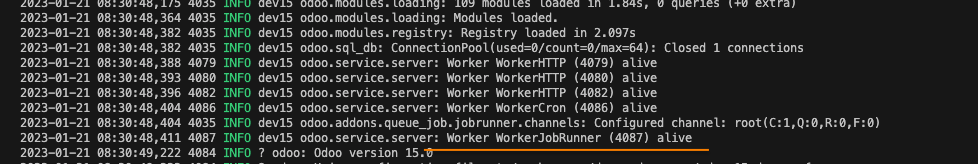
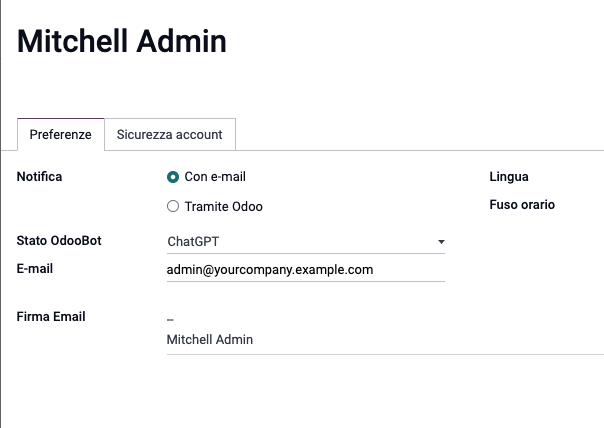

Maintainers
This module is maintained by the FL1.


You can answer: how many company in the system? how many contacts in a system? whats is today? > Add gpt-3.5-turbo model
Table of contents
05/03/2023 * add historic conversation for new model and correct order for message 03/03/2023 * add support for gpt-3.5-turbo model
24/02/2023 * bugfix error in coversation review the last response
15/12/2023 * add support latest conversartion and some data in mail_bot.py
To use this module, you need to:
History Context
Added support for same user language - you can set the language in the user preferences.
This module is required for not blocking the server when the API is called.
inside the preferences of the user you can set the chatGPT bot as default bot.
You can activate or deactivate the chatGPT bot for each user. You can activate or deactivate the chatGPT directly in the chat window.
You can type: #enable or #disable
Bugs are tracked on GitHub Issues. In case of trouble, please check there if your issue has already been reported. If you spotted it first, help us smashing it by providing a detailed and welcomed
Do not contact contributors directly about support or help with technical issues.
This module is maintained by the FL1.